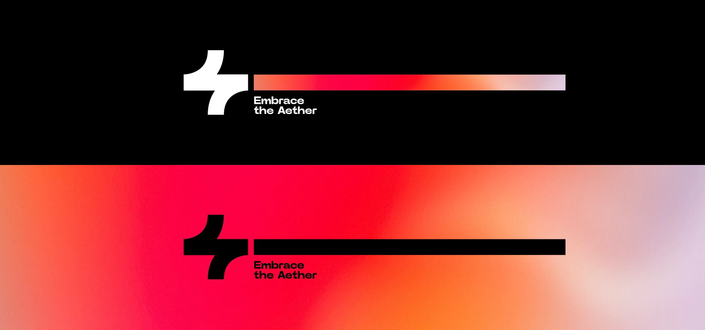
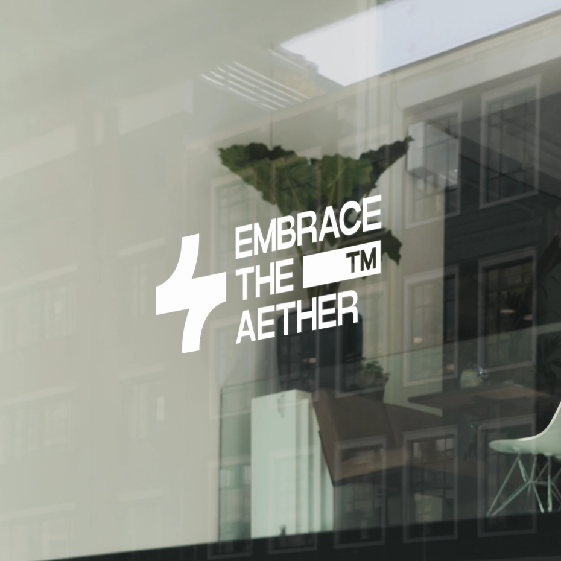
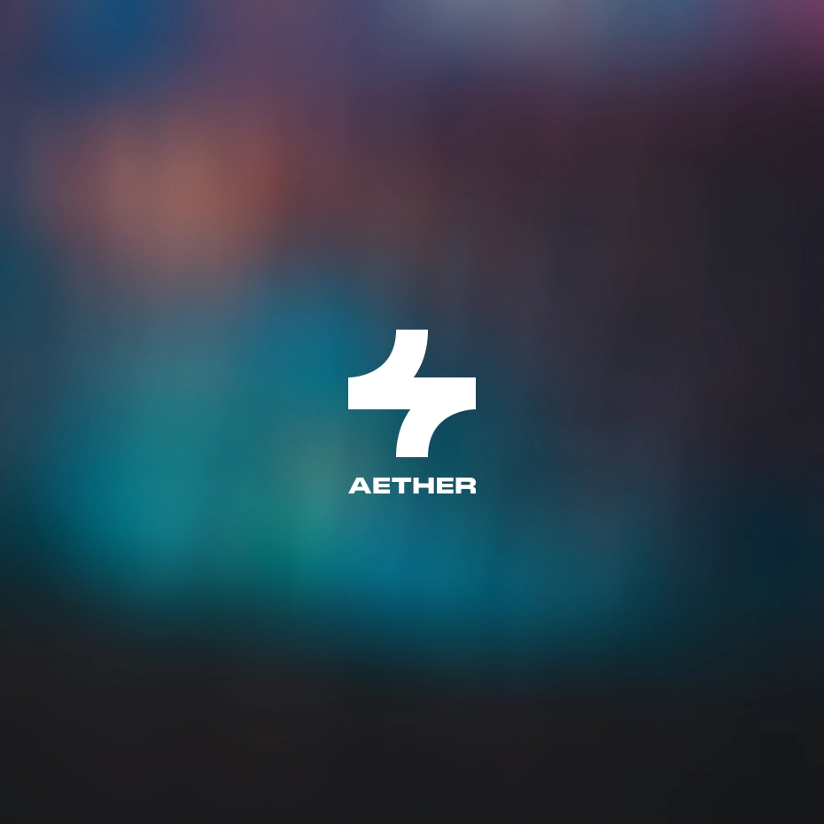
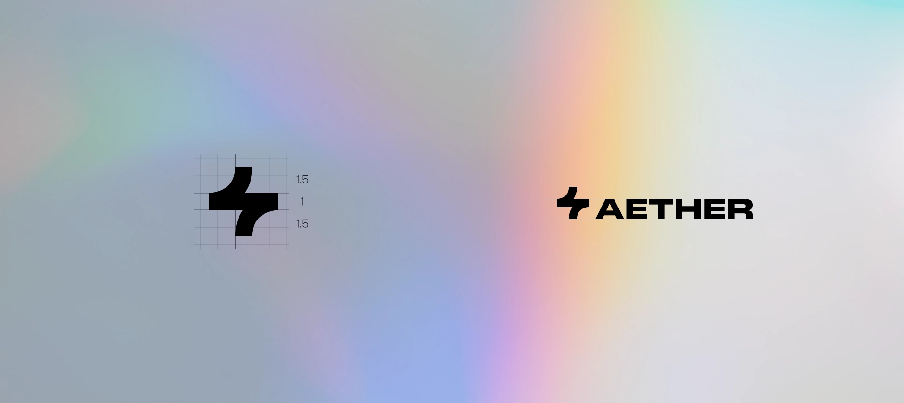
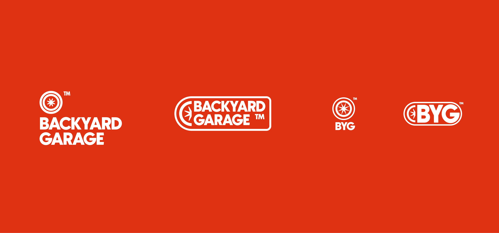
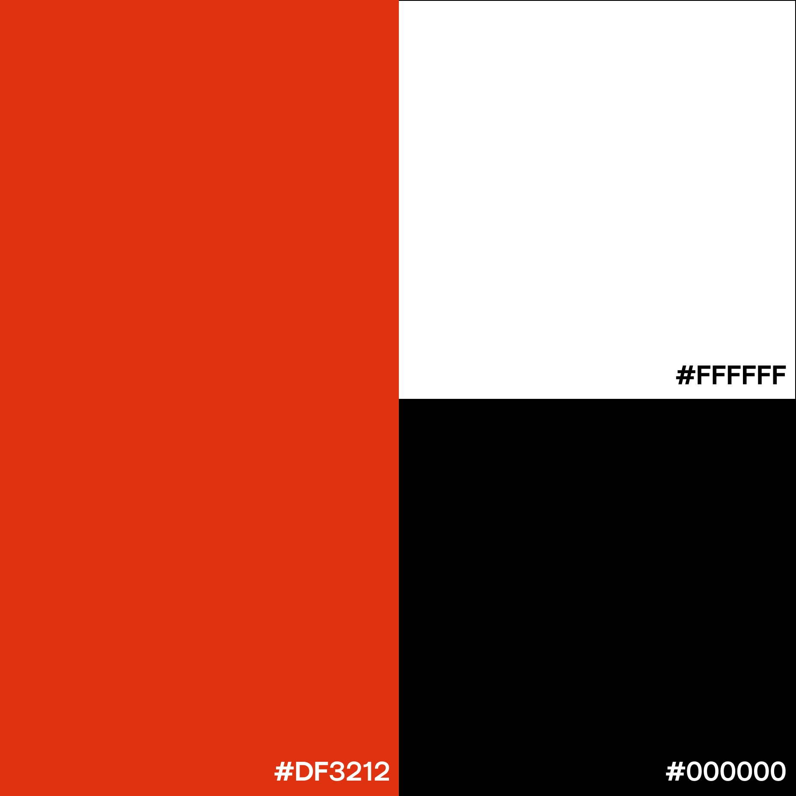
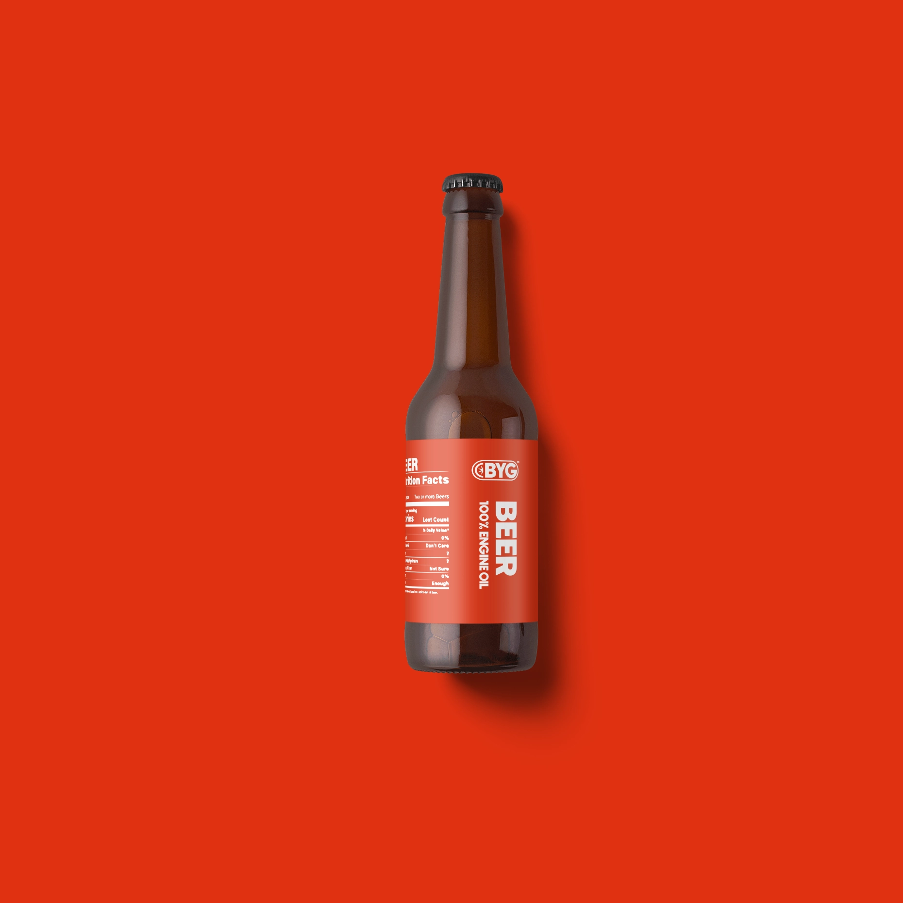

Over time, quite a lot of graphic design projects accumulated. This is not my core focus, but I still wanted to show some of them here.
01 // Aether
"Aether" is the label my friends and I put on most of our shared projects - this is Aether's logo and CI:




02 // Backyard Garage
Backyard Garage was a portfolio project for a vintage car restoration workshop. The logo always incorporates a stylized wheel rim and bold lettering:



03 // Varydeen
Varydeen is a portfolio project for a small game studio that is committed to creating immersive and captivating gaming experiences. The chat-icon inspired logo is meant to incorporate the social elements of gaming and technology.